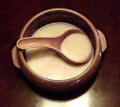

As much as I enjoy a glass of fine beer, I love to brew as well. Brewing is very enjoyable and rewarding hobby and I encourage all beer lovers to try.
I am currently brewing Korean rice wine called "Dong-dong-ju" (Yes. it's fun drink as it sounds) and will update the blog soon
